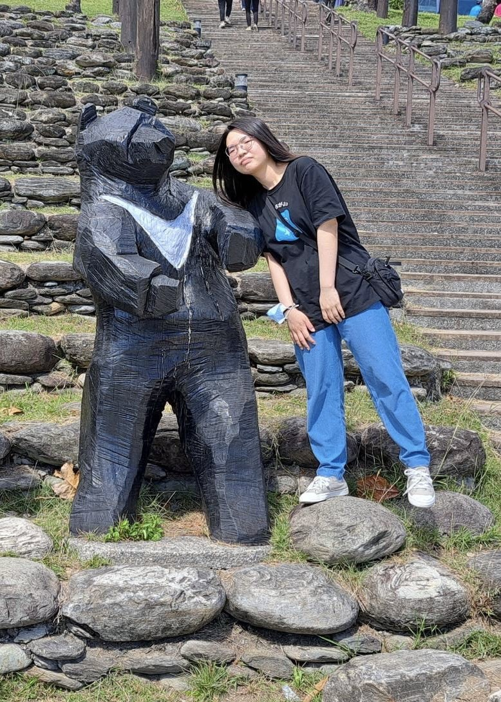

關於品牌
Le Petite Nook 融合了法文的精緻（Le Petite，小巧）與英文的舒適空間感（Nook，角落），符合「租屋族雖然空間有限，但依然能打造出極具質感、屬於自己的一隅」的品牌意象。
品牌精神
不同於傳統二手賣場的雜亂無章，Le Petite Nook 以「全方位生活提案」為核心，為租屋族提供空間改造靈感與高 CP 值的選擇。透過這些我們販售的好物，陪伴每位游牧於城市的房客，在有限的坪數裡，拼湊出一個既具備功能性、又充滿法式優雅溫馨的專屬小角落（Nook）。
成員介紹

心理四甲/王渟妤
在設計專案的過程中，我經歷了很多挫折和成長。在有限時間內，要將課堂上所學的知識變成實際成果並不容易，常常也因為程式跑不出來或錯誤而感到沮喪。 也因為這些困難，讓我能夠利用這個機會主動去尋找答案，不斷地練習和學習，把每次的失敗化作經驗。 我也學習到了團隊合作的重要性。當時在整合的時候完全沒有頭緒，大家都有各自不同類型的檔案，要如何去分類、連結彼此的檔案，大家都陷入茫然。 最後我們透過不斷的實體討論和溝通，共同尋找答案，一起完成這份專案，也感謝組員的互相幫助。
了解更多
企管三乙/黃姿綾
這次的多媒體期末專案讓我學到很多東西，除了運用這學期課堂上所學的專業知識，也結合了課輔時間補充的內容。
雖然在設計頁面的過程中花費了很多心力，像是位置排版、流程規劃、頁面整合等，對我來說都不是一件容易的事，但最後看到完成的成果時，還是覺得很有成就感。
因為自己並不是很熟悉所有課堂上的內容，所以在製作過程中遇到不少問題，但很感謝組員們願意互相幫忙、討論，也花時間約出來一起完成，不只是依靠電話或訊息溝通。
透過這次專案，我不只學習到更多實作經驗，也感受到團隊合作的重要性。
企管二乙/馮輝帆
剛開始做網頁專題的時候，最頭痛的就是程式碼全部擠在同一個檔案裡，越寫越混亂，常常找不到哪段代碼對應哪個畫面。 這次把網頁徹底拆開成 html、css和 java三個檔案，雖然剛開始要花時間搞懂怎麼互相連結，但拆開之後，每個檔案的程式碼都變短了，找問題和修改時方便很多，也比較好跟組員分配工作。 雖然在過程中花了很多時間在調整 style 和檢查 JavaScript 的變數名稱，但最後看到點擊登入、發表評論這些功能都可以正常運作，資料也有成功傳過去，真的覺得這段時間的除錯和練習都值得了。
了解更多